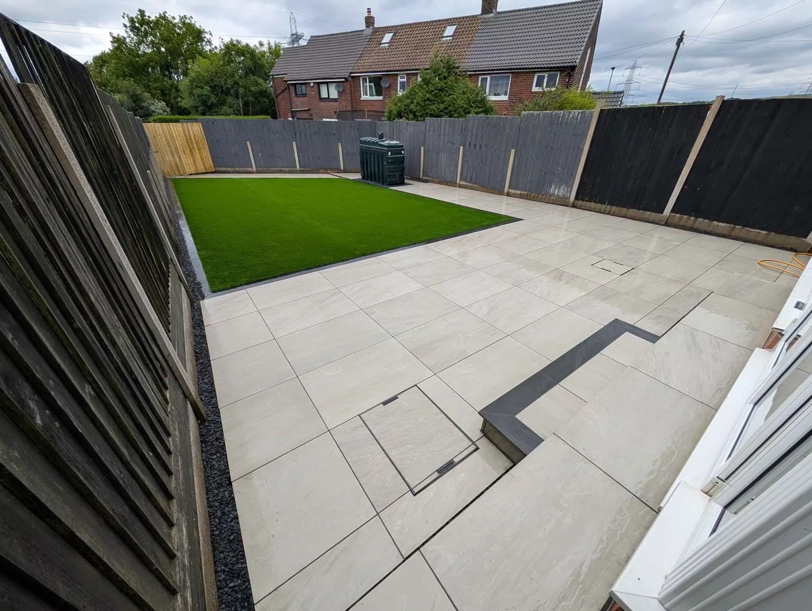

RIGHTGRASS · BESPOKE OUTDOOR LIVING
Green space.
Clear definition.
Artificial turf within a considered layout.
Artificial turf
Paving and contrasting borders define the artificial turf areas in these supplied project photographs. Open the full images to explore the layout and edges.
Discuss your projectTHE PROJECTS IN DETAIL
A closer look.
Tap a photograph for the complete view.
RIGHTGRASS · BLACKBURN
Let’s bring your garden to life.
Tell us what you have in mind for your outdoor space.
rightgrass@hotmail.co.uk